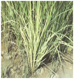

RICE :: VIRAL DISEASES :: RICE YELLOW DWARF DISEASE
Rice yellow dwarf disease – Rice yellow dwarf virus
Symptoms
Prominent stunting of plants and excessive tillering are the characteristic symptoms of the disease. Leaves yellowish green to whitish green, become soft and droop. Plants usually remain sterile but sometimes may produce small panicles with unfilled grains.
|  |
Pathogen
- Caused by a phytoplasma (rice yellow dwarf phytoplasma designated as a novel taxon, ‘Candidatus Phytoplasma oryzae’)
Disease Cycle
The disease is transmitted by leafhopper vectors Nephotettix sp. Nephotettix with a latent period of 25-30 days in the vector. The pathogen survives on several grass weeds.
Management
- Deep ploughing during summer months and burning of stubbles.
- Rice varieties IR62 and IR64 are moderately resistant to the disease.
- The management practices followed for Rice Tungro disease holds good for this disease also.